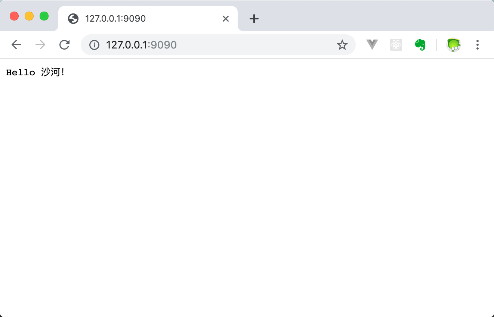

go语言基础之net/http
[!Tip]
本篇文章参考如下，如有侵权，请联系我删除。
Go语言内置的net/http包十分的优秀，提供了HTTP客户端和服务端的实现。
net/http介绍
Go语言内置的net/http包提供了HTTP客户端和服务端的实现。
HTTP协议
超文本传输协议（HTTP，HyperText Transfer Protocol)是互联网上应用最为广泛的一种网络传输协议，所有的WWW文件都必须遵守这个标准。设计HTTP最初的目的是为了提供一种发布和接收HTML页面的方法。
HTTP客户端
基本的HTTP/HTTPS请求
Get、Head、Post和PostForm函数发出HTTP/HTTPS请求。
resp, err := http.Get("http://example.com/")
...
resp, err := http.Post("http://example.com/upload", "image/jpeg", &buf)
...
resp, err := http.PostForm("http://example.com/form",
url.Values{"key": {"Value"}, "id": {"123"}})
程序在使用完response后必须关闭回复的主体。
resp, err := http.Get("http://example.com/")
if err != nil {
// handle error
}
defer resp.Body.Close()
body, err := ioutil.ReadAll(resp.Body)
// ...
GET请求示例
使用net/http包编写一个简单的发送HTTP请求的Client端，代码如下：
package main
import (
"fmt"
"io/ioutil"
"net/http"
)
func main() {
resp, err := http.Get("https://www.liwenzhou.com/")
if err != nil {
fmt.Printf("get failed, err:%v\n", err)
return
}
defer resp.Body.Close()
body, err := ioutil.ReadAll(resp.Body)
if err != nil {
fmt.Printf("read from resp.Body failed, err:%v\n", err)
return
}
fmt.Print(string(body))
}
将上面的代码保存之后编译成可执行文件，执行之后就能在终端打印liwenzhou.com网站首页的内容了，我们的浏览器其实就是一个发送和接收HTTP协议数据的客户端，我们平时通过浏览器访问网页其实就是从网站的服务器接收HTTP数据，然后浏览器会按照HTML、CSS等规则将网页渲染展示出来。
带参数的GET请求示例
关于GET请求的参数需要使用Go语言内置的net/url这个标准库来处理。
func main() {
apiUrl := "http://127.0.0.1:9090/get"
// URL param
data := url.Values{}
data.Set("name", "小王子")
data.Set("age", "18")
u, err := url.ParseRequestURI(apiUrl)
if err != nil {
fmt.Printf("parse url requestUrl failed, err:%v\n", err)
}
u.RawQuery = data.Encode() // URL encode
fmt.Println(u.String())
resp, err := http.Get(u.String())
if err != nil {
fmt.Printf("post failed, err:%v\n", err)
return
}
defer resp.Body.Close()
b, err := ioutil.ReadAll(resp.Body)
if err != nil {
fmt.Printf("get resp failed, err:%v\n", err)
return
}
fmt.Println(string(b))
}
对应的Server端HandlerFunc如下：
func getHandler(w http.ResponseWriter, r *http.Request) {
defer r.Body.Close()
data := r.URL.Query()
fmt.Println(data.Get("name"))
fmt.Println(data.Get("age"))
answer := `{"status": "ok"}`
w.Write([]byte(answer))
}
Post请求示例
上面演示了使用net/http包发送GET请求的示例，发送POST请求的示例代码如下：
package main
import (
"fmt"
"io/ioutil"
"net/http"
"strings"
)
// net/http post demo
func main() {
url := "http://127.0.0.1:9090/post"
// 表单数据
//contentType := "application/x-www-form-urlencoded"
//data := "name=小王子&age=18"
// json
contentType := "application/json"
data := `{"name":"小王子","age":18}`
resp, err := http.Post(url, contentType, strings.NewReader(data))
if err != nil {
fmt.Printf("post failed, err:%v\n", err)
return
}
defer resp.Body.Close()
b, err := ioutil.ReadAll(resp.Body)
if err != nil {
fmt.Printf("get resp failed, err:%v\n", err)
return
}
fmt.Println(string(b))
}
对应的Server端HandlerFunc如下：
func postHandler(w http.ResponseWriter, r *http.Request) {
defer r.Body.Close()
// 1. 请求类型是application/x-www-form-urlencoded时解析form数据
r.ParseForm()
fmt.Println(r.PostForm) // 打印form数据
fmt.Println(r.PostForm.Get("name"), r.PostForm.Get("age"))
// 2. 请求类型是application/json时从r.Body读取数据
b, err := ioutil.ReadAll(r.Body)
if err != nil {
fmt.Printf("read request.Body failed, err:%v\n", err)
return
}
fmt.Println(string(b))
answer := `{"status": "ok"}`
w.Write([]byte(answer))
}
自定义Client
要管理HTTP客户端的头域、重定向策略和其他设置，创建一个Client：
client := &http.Client{
CheckRedirect: redirectPolicyFunc,
}
resp, err := client.Get("http://example.com")
// ...
req, err := http.NewRequest("GET", "http://example.com", nil)
// ...
req.Header.Add("If-None-Match", `W/"wyzzy"`)
resp, err := client.Do(req)
// ...
自定义Transport
要管理代理、TLS配置、keep-alive、压缩和其他设置，创建一个Transport：
tr := &http.Transport{
TLSClientConfig: &tls.Config{RootCAs: pool},
DisableCompression: true,
}
client := &http.Client{Transport: tr}
resp, err := client.Get("https://example.com")
Client和Transport类型都可以安全的被多个goroutine同时使用。出于效率考虑，应该一次建立、尽量重用。
服务端
默认的Server
ListenAndServe使用指定的监听地址和处理器启动一个HTTP服务端。处理器参数通常是nil，这表示采用包变量DefaultServeMux作为处理器。
Handle和HandleFunc函数可以向DefaultServeMux添加处理器。
http.Handle("/foo", fooHandler)
http.HandleFunc("/bar", func(w http.ResponseWriter, r *http.Request) {
fmt.Fprintf(w, "Hello, %q", html.EscapeString(r.URL.Path))
})
log.Fatal(http.ListenAndServe(":8080", nil))
默认的Server示例
使用Go语言中的net/http包来编写一个简单的接收HTTP请求的Server端示例，net/http包是对net包的进一步封装，专门用来处理HTTP协议的数据。具体的代码如下：
// http server
func sayHello(w http.ResponseWriter, r *http.Request) {
fmt.Fprintln(w, "Hello 沙河！")
}
func main() {
http.HandleFunc("/", sayHello)
err := http.ListenAndServe(":9090", nil)
if err != nil {
fmt.Printf("http server failed, err:%v\n", err)
return
}
}
将上面的代码编译之后执行，打开你电脑上的浏览器在地址栏输入 127.0.0.1:9090回车，此时就能够看到如下页面了。
{kind=link}
自定义Server
要管理服务端的行为，可以创建一个自定义的Server：
s := &http.Server{
Addr: ":8080",
Handler: myHandler,
ReadTimeout: 10 * time.Second,
WriteTimeout: 10 * time.Second,
MaxHeaderBytes: 1 << 20,
}
log.Fatal(s.ListenAndServe())
模块介绍
Request
// 利用指定的method, url以及可选的body返回一个新的请求.如果body参数实现了
// io.Closer接口，Request返回值的Body 字段会被设置为body，并会被Client
// 类型的Do、Post和PostForm方法以及Transport.RoundTrip方法关闭。
func NewRequest(method, urlStr string, body io.Reader) (*Request, error)
// 从b中读取和解析一个请求.
func ReadRequest(b *bufio.Reader) (req *Request, err error)
// 给request添加cookie, AddCookie向请求中添加一个cookie.按照RFC 6265
// section 5.4的规则, AddCookie不会添加超过一个Cookie头字段.
// 这表示所有的cookie都写在同一行, 用分号分隔（cookie内部用逗号分隔属性）
func (r *Request) AddCookie(c *Cookie)
// 返回request中指定名name的cookie，如果没有发现，返回ErrNoCookie
func (r *Request) Cookie(name string) (*Cookie, error)
// 返回该请求的所有cookies
func (r *Request) Cookies() []*Cookie
// 利用提供的用户名和密码给http基本权限提供具有一定权限的header。
// 当使用http基本授权时，用户名和密码是不加密的
func (r *Request) SetBasicAuth(username, password string)
// 如果在request中发送，该函数返回客户端的user-Agent
func (r *Request) UserAgent() string
// 对于指定格式的key，FormFile返回符合条件的第一个文件，如果有必要的话，
// 该函数会调用ParseMultipartForm和ParseForm。
func (r *Request) FormFile(key string) (multipart.File, *multipart.FileHeader, error)
// 返回key获取的队列中第一个值。在查询过程中post和put中的主题参数优先级
// 高于url中的value。为了访问相同key的多个值，调用ParseForm然后直接
// 检查RequestForm。
func (r *Request) FormValue(key string) string
// 如果这是一个有多部分组成的post请求，该函数将会返回一个MIME 多部分reader，
// 否则的话将会返回一个nil和error。使用本函数代替ParseMultipartForm
// 可以将请求body当做流stream来处理。
func (r *Request) MultipartReader() (*multipart.Reader, error)
// 解析URL中的查询字符串，并将解析结果更新到r.Form字段。对于POST或PUT
// 请求，ParseForm还会将body当作表单解析，并将结果既更新到r.PostForm也
// 更新到r.Form。解析结果中，POST或PUT请求主体要优先于URL查询字符串
// （同名变量，主体的值在查询字符串的值前面）。如果请求的主体的大小没有被
// MaxBytesReader函数设定限制，其大小默认限制为开头10MB。
// ParseMultipartForm会自动调用ParseForm。重复调用本方法是无意义的。
func (r *Request) ParseForm() error
// ParseMultipartForm将请求的主体作为multipart/form-data解析。
// 请求的整个主体都会被解析，得到的文件记录最多 maxMemery字节保存在内存，
// 其余部分保存在硬盘的temp文件里。如果必要，ParseMultipartForm会
// 自行调用 ParseForm。重复调用本方法是无意义的。
func (r *Request) ParseMultipartForm(maxMemory int64) error
// 返回post或者put请求body指定元素的第一个值，其中url中的参数被忽略。
func (r *Request) PostFormValue(key string) string
// 检测在request中使用的http协议是否至少是major.minor
func (r *Request) ProtoAtLeast(major，minor int) bool
// 如果request中有refer，那么refer返回相应的url。Referer在request
// 中是拼错的，这个错误从http初期就已经存在了。该值也可以从Headermap中
// 利用Header["Referer"]获取；在使用过程中利用Referer这个方法而
// 不是map的形式的好处是在编译过程中可以检查方法的错误，而无法检查map中
// key的错误。
func (r *Request) Referer() string
// Write方法以有线格式将HTTP/1.1请求写入w（用于将请求写入下层TCPConn等）
// 。本方法会考虑请求的如下字段：Host URL Method (defaults to "GET")
// Header ContentLength TransferEncoding Body如果存在Body，
// ContentLength字段<= 0且TransferEncoding字段未显式设置为
// ["identity"]，Write方法会显式添加”Transfer-Encoding: chunked”
// 到请求的头域。Body字段会在发送完请求后关闭。
func (r *Request) Write(w io.Writer) error
// 该函数与Write方法类似，但是该方法写的request是按照http代理的格式去写。
// 尤其是，按照RFC 2616 Section 5.1.2，WriteProxy会使用绝对URI
// （包括协议和主机名）来初始化请求的第1行（Request-URI行）。无论何种情况，
// WriteProxy都会使用r.Host或r.URL.Host设置Host头。
func (r *Request) WriteProxy(w io.Writer) error
Response
// 注意是在response.go中定义的，而在server.go有一个
// type response struct ，注意大小写。这个结构是体现在server端的功能。
type Response struct
// ReadResponse从r读取并返回一个HTTP 回复。req参数是可选的，指定该回复
// 对应的请求（即是对该请求的回复）。如果是nil，将假设请 求是GET请求。
// 客户端必须在结束resp.Body的读取后关闭它。读取完毕并关闭后，客户端可以
// 检查resp.Trailer字段获取回复的 trailer的键值对。
func ReadResponse(r *bufio.Reader, req *Request) (*Response, error)
// 解析cookie并返回在header中利用set-Cookie设定的cookie值。
func (r *Response) Cookies() []*Cookie
// 返回response中Location的header值的url。如果该值存在的话，则对于
// 请求问题可以解决相对重定向的问题，如果该值为nil，则返回ErrNOLocation。
func (r *Response) Location() (*url.URL，error)
// 判定在response中使用的http协议是否至少是major.minor的形式。
func (r *Response) ProtoAtLeast(major, minor int) bool
// 将response中信息按照线性格式写入w中。
func (r *Response) Write(w io.Writer) error
Client
// Client具有Do，Get，Head，Post以及PostForm等方法。 其中Do方法可以对
// Request进行一系列的设定，而其他的对request设定较少。如果Client使用默认的
// Client，则其中的Get，Head，Post以及PostForm方法相当于默认的http.Get,
// http.Post, http.Head以及http.PostForm函数。
type Client struct
// 利用GET方法对一个指定的URL进行请求，如果response是如下重定向中的一个
// 代码，则Get之后将会调用重定向内容，最多10次重定向。
// 301 (永久重定向，告诉客户端以后应该从新地址访问)
// 302 (暂时性重定向，作为HTTP1.0的标准，PHP的默认Location重定向用到
// 也是302)，注：303和307其实是对302的细化。
// 303 (对于Post请求，它表示请求已经被处理，客户端可以接着使用GET方法去
// 请求Location里的URl)
// 307 (临时重定向，对于Post请求，表示请求还没有被处理，客户端应该向
// Location里的URL重新发起Post请求)
func Get(url string) (resp *Response, err error)
// 该函数功能见net中Head方法功能。该方法与默认的defaultClient中
// Head方法一致。
func Head(url string) (resp *Response, err error)
// 该方法与默认的defaultClient中Post方法一致。
func Post(url string, bodyType string, body io.Reader) (resp *Response, err error)
// 该方法与默认的defaultClient中PostForm方法一致。
func PostForm(url string, data url.Values) (resp *Response, err error)
// Do发送http请求并且返回一个http响应, 遵守client的策略, 如重定向,
// cookies以及auth等.错误经常是由于策略引起的, 当err是nil时, resp
// 总会包含一个非nil的resp.body.当调用者读完resp.body之后应该关闭它,
// 如果resp.body没有关闭, 则Client底层RoundTripper将无法重用存在的
// TCP连接去服务接下来的请求, 如果resp.body非nil, 则必须对其进行关闭.
// 通常来说, 经常使用Get, Post, 或者PostForm来替代Do.
func (c *Client) Do(req *Request) (resp *Response, err error)
// 利用get方法请求指定的url.Get请求指定的页面信息，并返回实体主体。
func (c *Client) Get(url string) (resp *Response, err error)
// 利用head方法请求指定的url，Head只返回页面的首部。
func (c *Client) Head(url string) (resp *Response, err error)
// post方法请求指定的URl, 如果body也是一个io.Closer, 则在请求之后关闭它
func (c *Client) Post(url string, bodyType string, body io.Reader) (resp *Response, err error)
// 利用post方法请求指定的url, 利用data的key和value作为请求体.
func (c *Client) PostForm(url string, data url.Values) (resp *Response, err error)
Server 服务端
http Server服务端用来接收并响应http Client端发出的http Request请求，是net/http包中非常重要和关键的一个功能。我们在Go语言中简单就能搭建HTTP服务器，就是因为它的存在。
在server.go文件中还定义了一个非常重要的接口：Handler，另外还有一个结构体response，这和http.Response结构体只有首字母大小写不一致，不过这个response 也是响应，只不过是专门用在服务端，和http.Response结构体是完全两回事。
type Handler interface {
ServeHTTP(ResponseWriter, *Request)
}
type Server struct
// 监听TCP网络地址srv.Addr然后调用Serve来处理接下来连接的请求。
// 如果srv.Addr是空的话，则使用“:http”。
func (srv *Server) ListenAndServe() error
// ListenAndServeTLS监听srv.Addr确定的TCP地址，并且会调用Serve
// 方法处理接收到的连接。必须提供证书文件和对应的私钥文 件。如果证书是由
// 权威机构签发的，certFile参数必须是顺序串联的服务端证书和CA证书。
// 如果srv.Addr为空字符串，会使 用”:https”。
func (srv *Server) ListenAndServeTLS(certFile, keyFile string) error
// 接受Listener l的连接，创建一个新的服务协程。该服务协程读取请求然后调用
// srv.Handler来应答。实际上就是实现了对某个端口进行监听，然后创建相应的连接。
func (srv *Server) Serve(l net.Listener) error
// 该函数控制是否http的keep-alives能够使用，默认情况下，keep-alives总是可用的。
// 只有资源非常紧张的环境或者服务端在关闭进程中时，才应该关闭该功能。
func (s *Server) SetKeepAlivesEnabled(v bool)
// 是一个http请求多路复用器，它将每一个请求的URL和
// 一个注册模式的列表进行匹配，然后调用和URL最匹配的模式的处理器进行后续操作。
type ServeMux
// 初始化一个新的ServeMux
func NewServeMux() *ServeMux
// 将handler注册为指定的模式，如果该模式已经有了handler，则会出错panic。
func (mux *ServeMux) Handle(pattern string, handler Handler)
// 将handler注册为指定的模式
func (mux *ServeMux) HandleFunc(pattern string, handler func(ResponseWriter, *Request))
// 根据指定的r.Method, r.Host以及r.RUL.Path返回一个用来处理给定请求的handler。
// 该函数总是返回一个非nil的 handler，如果path不是一个规范格式，则handler会
// 重定向到其规范path。Handler总是返回匹配该请求的的已注册模式；在内建重定向
// 处理器的情况下，pattern会在重定向后进行匹配。如果没有已注册模式可以应用于该请求，
// 本方法将返回一个内建的”404 page not found”处理器和一个空字符串模式。
func (mux *ServeMux) Handler(r *Request) (h Handler, pattern string)
// 该函数用于将最接近请求url模式的handler分配给指定的请求。
func (mux *ServeMux) ServeHTTP(w ResponseWriter, r *Request)
Handler接口应该算是server.go中最关键的接口了，如果我们仔细看这个文件的源代码，将会发现很多结构体实现了这个接口的ServeHTTP方法。
注意这个接口的注释：Handler响应HTTP请求。没错，最终我们的http服务是通过实现ServeHTTP(ResponseWriter, *Request)来达到服务端接收客户端请求并响应。
理解 HTTP 构建的网络应用只要关注两个端---客户端（Clinet）和服务端（Server），两个端的交互来自 Clinet 的 Request，以及Server端的Response。HTTP服务器，主要在于如何接受 Clinet端的 Request，Server端向Client端返回Response。
那这个过程是什么样的呢？要讲清楚这个过程，还需要回到开始的HTTP服务器程序。这里以前面我们了解到的http Request、http Response、http Client作为基础，并重点分析server.go源代码才能讲清楚：
func main() {
http.HandleFunc("/", myfunc)
http.ListenAndServe(":8080", nil)
}
以上两行代码，就成功启动了一个HTTP服务器。我们通过net/http 包源代码分析发现，调用Http.HandleFunc，按顺序做了几件事：
1.Http.HandleFunc调用了DefaultServeMux的HandleFunc
func HandleFunc(pattern string, handler func(ResponseWriter, *Request)) {
DefaultServeMux.HandleFunc(pattern, handler)
}
2.DefaultServeMux.HandleFunc调用了DefaultServeMux的Handle，DefaultServeMux是一个ServeMux 指针变量。而ServeMux 是Go语言中的Multiplexer（多路复用器），通过Handle匹配pattern 和我们定义的handler（其实就是http.HandlerFunc函数类型变量）。
var DefaultServeMux = &defaultServeMux
var defaultServeMux ServeMux
func (mux *ServeMux) HandleFunc(pattern string, handler func(ResponseWriter, *Request)) {
mux.Handle(pattern, HandlerFunc(handler))
}
注意： 上面的方法命名Handle，HandleFunc和HandlerFunc，Handler（接口），他们很相似，容易混淆。记住Handle和HandleFunc和pattern 匹配有关，也即往DefaultServeMux的map[string]muxEntry中增加对应的handler和路由规则。
接着我们看看myfunc的声明和定义：
func myfunc(w http.ResponseWriter, r *http.Request) {
fmt.Fprintf(w, "hi")
}
而type HandlerFunc func(ResponseWriter, *Request) 是一个函数类型，而我们定义的myfunc的函数签名刚好符合这个函数类型。
所以http.HandleFunc("/", myfunc)，实际上是mux.Handle("/", HandlerFunc(myfunc))。
HandlerFunc(myfunc) 让myfunc成为了HandlerFunc类型，我们称myfunc为handler。而HandlerFunc类型是具有ServeHTTP方法的，而有了ServeHTTP方法也就是实现了Handler接口。
func (f HandlerFunc) ServeHTTP(w ResponseWriter, r *Request) {
f(w, r) // 这相当于自身的调用
}
现在ServeMux和Handler都和我们的myfunc联系上了，myfunc是一个Handler接口变量也是HandlerFunc类型变量，接下来和结构体server有关了。
从http.ListenAndServe的源码可以看出，它创建了一个server对象，并调用server对象的ListenAndServe方法：
func ListenAndServe(addr string, handler Handler) error {
server := &Server{Addr: addr, Handler: handler}
return server.ListenAndServe()
}
而我们HTTP服务器中第二行代码：
http.ListenAndServe(":8080", nil)
创建了一个server对象，并调用server对象的ListenAndServe方法，这里没有直接传递Handler，而是默认使用DefautServeMux作为multiplexer，myfunc是存在于handler和路由规则中的。
Server的ListenAndServe方法中，会初始化监听地址Addr，同时调用Listen方法设置监听。
for {
rw, e := l.Accept()
...
c := srv.newConn(rw)
c.setState(c.rwc, StateNew)
go c.serve(ctx)
}
监听开启之后，一旦客户端请求过来，Go就开启一个协程go c.serve(ctx)处理请求，主要逻辑都在serve方法之中。
func (c *conn) serve(ctx context.Context)，这个方法很长，里面主要的一句：serverHandler{c.server}.ServeHTTP(w, w.req)。其中w由w, err := c.readRequest(ctx)得到，因为有传递context。
还是来看源代码：
type serverHandler struct {
srv *Server
}
func (sh serverHandler) ServeHTTP(rw ResponseWriter, req Request) {
handler := sh.srv.Handler
if handler == nil {
handler = DefaultServeMux
}
if req.RequestURI == "" && req.Method == "OPTIONS" {
handler = globalOptionsHandler{}
}
handler.ServeHTTP(rw, req)
}
从http.ListenAndServe(":8080", nil)开始，handler是nil，所以最后实际ServeHTTP方法是DefaultServeMux.ServeHTTP(rw, req)。
func (mux *ServeMux) ServeHTTP(w ResponseWriter, r *Request) {
if r.RequestURI == "*" {
if r.ProtoAtLeast(1, 1) {
w.Header().Set("Connection", "close")
}
w.WriteHeader(StatusBadRequest)
return
}
h, _ := mux.Handler(r)
h.ServeHTTP(w, r)
}
通过func (mux ServeMux) Handler(r Request) (h Handler, pattern string)，我们得到Handler h，然后执行h.ServeHTTP(w, r)方法，也就是执行我们的myfunc函数（别忘了myfunc是HandlerFunc类型，而他的ServeHTTP(w, r)方法这里其实就是自己调用自己），把response写到http.ResponseWriter对象返回给客户端，fmt.Fprintf(w, "hi")，我们在客户端会接收到hi 。至此整个HTTP服务执行完成。
总结下，HTTP服务整个过程大概是这样：
Request -> ServeMux(Multiplexer) -> handler-> Response
我们再看下面代码：
http.ListenAndServe(":8080", nil)
func ListenAndServe(addr string, handler Handler) error {
server := &Server{Addr: addr, Handler: handler}
return server.ListenAndServe()
}
上面代码实际上就是server.ListenAndServe()执行的实际效果，只不过简单声明了一个结构体Server{Addr: addr, Handler: handler}实例。如果我们声明一个Server实例，完全可以达到深度自定义 http.Server的目的：
package main
import (
"fmt"
"net/http"
)
func myfunc(w http.ResponseWriter, r *http.Request) {
fmt.Fprintf(w, "hi")
}
func main() {
// 更多http.Server的字段可以根据情况初始化
server := http.Server{
Addr: ":8080",
ReadTimeout: 0,
WriteTimeout: 0,
}
http.HandleFunc("/", myfunc)
server.ListenAndServe()
}
这样服务也能跑起来，而且我们完全可以根据情况来自定义我们的Server！
还可以指定Servemux的用法:
GOPATH\src\go42\chapter-15\15.3\7\main.go
package main
import (
"fmt"
"net/http"
)
func myfunc(w http.ResponseWriter, r *http.Request) {
fmt.Fprintf(w, "hi")
}
func main() {
mux := http.NewServeMux()
mux.HandleFunc("/", myfunc)
http.ListenAndServe(":8080", mux)
}
如果既指定Servemux又自定义 http.Server，因为Server中有字段Handler，所以我们可以直接把Servemux变量作为Server.Handler：
package main
import (
"fmt"
"net/http"
)
func myfunc(w http.ResponseWriter, r *http.Request) {
fmt.Fprintf(w, "hi")
}
func main() {
server := http.Server{
Addr: ":8080",
ReadTimeout: 0,
WriteTimeout: 0,
}
mux := http.NewServeMux()
server.Handler = mux
mux.HandleFunc("/", myfunc)
server.ListenAndServe()
}
在前面pprof 包的内容中我们也用了本章开头这段代码，当我们访问http://localhost:8080/debug/pprof/ 时可以看到对应的性能分析报告。 因为我们这样导入 _"net/http/pprof" 包时，在文件 pprof.go 文件中init 函数已经定义好了handler：
func init() {
http.HandleFunc("/debug/pprof/", Index)
http.HandleFunc("/debug/pprof/cmdline", Cmdline)
http.HandleFunc("/debug/pprof/profile", Profile)
http.HandleFunc("/debug/pprof/symbol", Symbol)
http.HandleFunc("/debug/pprof/trace", Trace)
}
所以，我们就可以通过浏览器访问上面地址来看到报告。现在再来看这些代码，我们就明白怎么回事了！
自定义处理器（Custom Handlers）
自定义的Handler：
标准库http提供了Handler接口，用于开发者实现自己的handler。只要实现接口的ServeHTTP方法即可。
package main
import (
"log"
"net/http"
"time"
)
type timeHandler struct {
format string
}
func (th *timeHandler) ServeHTTP(w http.ResponseWriter, r *http.Request) {
tm := time.Now().Format(th.format)
w.Write([]byte("The time is: " + tm))
}
func main() {
mux := http.NewServeMux()
th := &timeHandler{format: time.RFC1123}
mux.Handle("/time", th)
log.Println("Listening...")
http.ListenAndServe(":3000", mux)
}
我们知道，NewServeMux可以创建一个ServeMux实例，ServeMux同时也实现了ServeHTTP方法，因此代码中的mux也是一种handler。把它当成参数传给http.ListenAndServe方法，后者会把mux传给Server实例。因为指定了handler，因此整个http服务就不再是DefaultServeMux，而是mux，无论是在注册路由还是提供请求服务的时候。
任何有 func(http.ResponseWriter，*http.Request) 签名的函数都能转化为一个 HandlerFunc 类型。这很有用，因为 HandlerFunc 对象内置了 ServeHTTP 方法，后者可以聪明又方便的调用我们最初提供的函数内容。
将函数作为处理器
package main
import (
"log"
"net/http"
"time"
)
func timeHandler(w http.ResponseWriter, r *http.Request) {
tm := time.Now().Format(time.RFC1123)
w.Write([]byte("The time is: " + tm))
}
func main() {
mux := http.NewServeMux()
// Convert the timeHandler function to a HandlerFunc type
th := http.HandlerFunc(timeHandler)
// And add it to the ServeMux
mux.Handle("/time", th)
log.Println("Listening...")
http.ListenAndServe(":3000", mux)
}
创建新的server：
func index(w http.ResponseWriter, r *http.Request) {
w.Header().Set("Content-Type", "text/html")
html := `<doctype html>
<html>
<head>
<title>Hello World</title>
</head>
<body>
<p>
Welcome
</p>
</body>
</html>`
fmt.Fprintln(w, html)
}
func main(){
http.HandleFunc("/", index)
server := &http.Server{
Addr: ":8000",
ReadTimeout: 60 * time.Second,
WriteTimeout: 60 * time.Second,
}
server.ListenAndServe()
}
中间件Middleware
所谓中间件，就是连接上下级不同功能的函数或者软件，通常进行一些包裹函数的行为，为被包裹函数提供添加一些功能或行为。前文的HandleFunc就能把签名为 func(w http.ResponseWriter, r *http.Reqeust)的函数包裹成handler。这个函数也算是中间件。
Go的http中间件很简单，只要实现一个函数签名为func(http.Handler) http.Handler的函数即可。http.Handler是一个接口，接口方法我们熟悉的为serveHTTP。返回也是一个handler。因为Go中的函数也可以当成变量传递或者或者返回，因此也可以在中间件函数中传递定义好的函数，只要这个函数是一个handler即可，即实现或者被handlerFunc包裹成为handler处理器。
func index(w http.ResponseWriter, r *http.Request) {
w.Header().Set("Content-Type", "text/html")
html := `<doctype html>
<html>
<head>
<title>Hello World</title>
</head>
<body>
<p>
Welcome
</p>
</body>
</html>`
fmt.Fprintln(w, html)
}
func middlewareHandler(next http.Handler) http.Handler{
return http.HandlerFunc(func(w http.ResponseWriter, r *http.Request){
// 执行handler之前的逻辑
next.ServeHTTP(w, r)
// 执行完毕handler后的逻辑
})
}
func loggingHandler(next http.Handler) http.Handler {
return http.HandlerFunc(func(w http.ResponseWriter, r *http.Request) {
start := time.Now()
log.Printf("Started %s %s", r.Method, r.URL.Path)
next.ServeHTTP(w, r)
log.Printf("Completed %s in %v", r.URL.Path, time.Since(start))
})
}
func main() {
http.Handle("/", loggingHandler(http.HandlerFunc(index)))
http.ListenAndServe(":8000", nil)
}